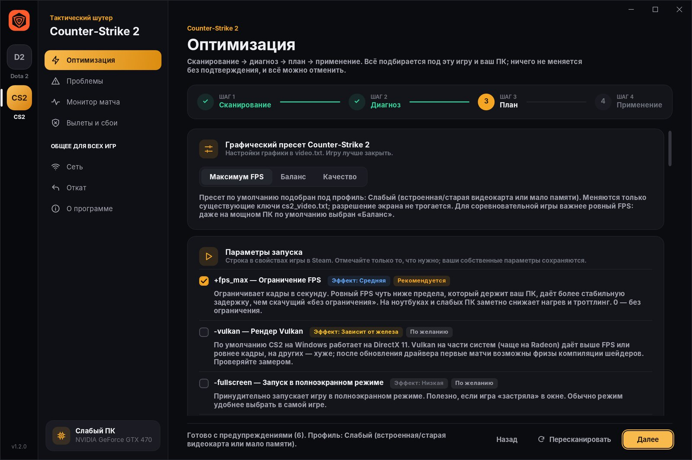
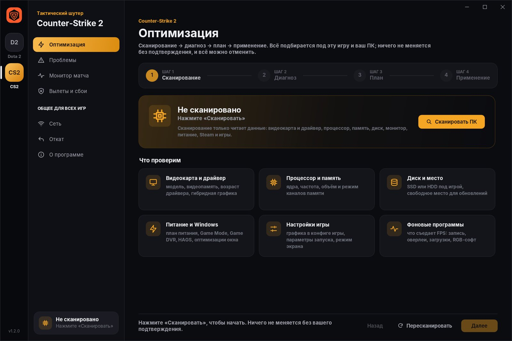
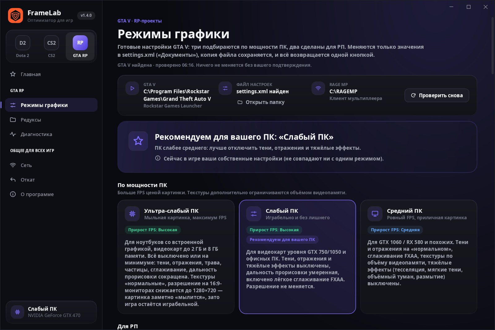
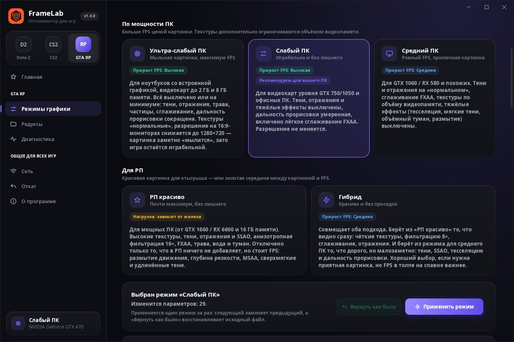
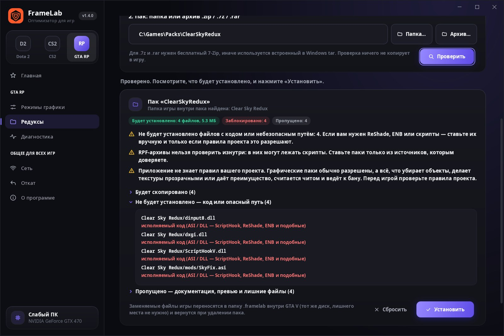
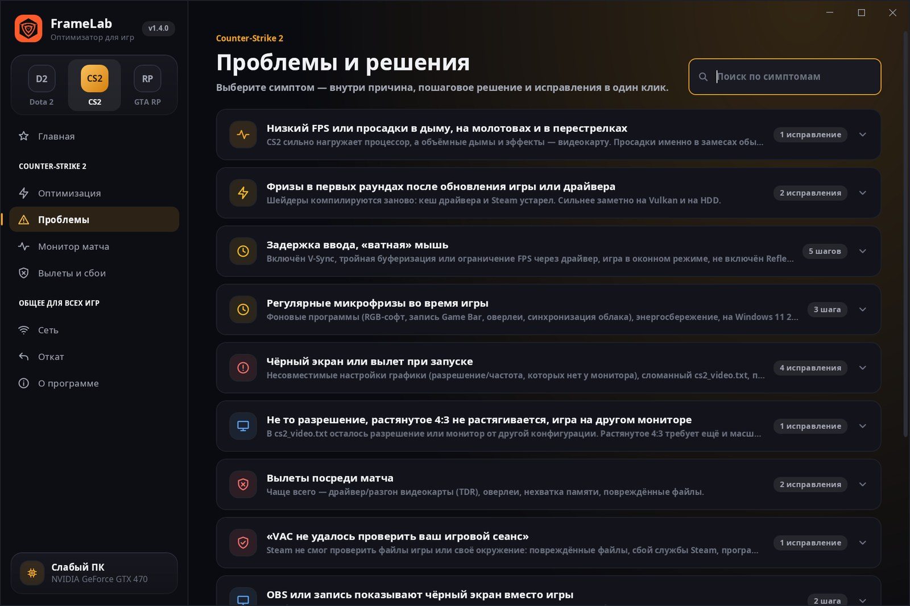
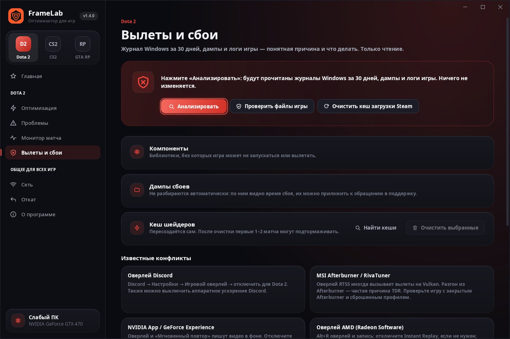

Скриншоты
Так выглядит программа








Шаг «План»: пресет под ваш профиль ПК, параметры запуска, настройки Windows. У каждого пункта — эффект и статус.
FrameLab сканирует ПК и настройки игры, показывает, что мешает, по важности, и исправляет это. Dota 2, CS2 и GTA V для RP-проектов: у каждой настройки честный эффект, а любое изменение отменяется в один клик.
Мастер ведёт от сканирования до отчёта. По умолчанию программа сначала только показывает, что изменит.
Видеокарта и драйвер, процессор, память, диск, монитор, питание, Steam и игра. Результат сохраняется.
Что мешает игре — по важности: проблемы, предупреждения и то, что уже настроено.
Пресет графики под ваш ПК, параметры запуска, настройки Windows. Спорное выключено.
Отчёт по каждому шагу и кнопка «Отменить» рядом с каждым пунктом.
Для каждой игры свой мастер, свои пресеты и своя база проблем. Переключите игру сверху — содержимое поменяется.
Три подбираются по мощности: «Ультра-слабый ПК» (мыльная картинка, зато играбельно на встроенной графике), «Слабый», «Средний». Два для отыгрыша: «РП красиво» — почти максимум без лишнего, и «Гибрид» — чёткая картинка без просадок в толпе. Меняется только settings.xml, «Вернуть как было» — одной кнопкой.
Папка или архив → проверка → видно, что встанет и что заблокировано. Оригиналы игры сохраняются и возвращаются при удалении.
.asi.dllScriptHookReShade.ytd .yft .rpfМонитор на 144 Гц, оставленный на 60, Reflex / Anti-Lag, V-Sync и окно без рамки — в диагнозе. Таймер Windows и MPO — по желанию, с пометкой «спорно».
Внутри пошаговое решение и кнопки-исправления: сброс графики, отключение autoexec, DX11 ↔ Vulkan, очистка кеша шейдеров. Всё отменяется там же.
Запишите матч — в конце график FPS по минутам и причина просадки. FPS пишет встроенный Intel PresentMon, к процессу игры программа не обращается.
В CS2 нет вступительного ролика, rate-команды ушли вместе с subtick. Найдёт такое и предложит убрать.
Копия перед каждым шагом, «Откатить всё» и точка восстановления Windows.
30 дней событий: модуль сбоя переводится в причину.
Пинг, потери и jitter до роутера, публичных DNS и релеев Valve. Wi-Fi или кабель, уровень сигнала, фоновый трафик. Значения ниже — пример.
На ноутбуках с двумя GPU показывает, на какой карте реально идёт игра, и переключает на дискретную.







Эффект каждой настройки подписан прямо в программе. Спорное помечено и выключено по умолчанию.
| Что меняет | Эффект |
|---|---|
| Графический пресеттолько существующие ключи конфига, остальное байт в байт | Высокий |
| Игра на мощной видеокартеноутбуки с двумя GPU | Высокий |
| Параметры запускаполезные добавит, бесполезные предложит убрать | Средний |
| Фоновая запись Xbox Game Bar | Средний |
| План питания, HAGS, полноэкранный режим | Зависит от железа |
| Игровой режим Windows | Низкий |
| «Залипание клавиш» по Shift ×5не про FPS: игра больше не сворачивается | Низкий |
| Приоритет игр в MMCSS, Power Throttlingспорно — выключено по умолчанию | Низкий |
| Высокий приоритет процессаспорно — выключено по умолчанию | Низкий |
| Частота монитора на максимумзадержка ввода: подсказка, режим экрана программа не меняет | Высокий |
| Таймер Windows 1 мс, отключение MPOспорно — выключено по умолчанию | Зависит от железа |
| Режимы графики GTA Vтолько settings.xml; «РП красиво» — про картинку, а не FPS | Высокий |
FrameLab-Setup.exe с GitHub. Права администратора для установки не нужны. Старая версия обновится сама.
Если появится «Windows защитила ваш компьютер» — «Подробнее» → «Выполнить в любом случае». Так бывает у программ без платной подписи.
Dota 2, CS2 или GTA RP слева → «Сканировать ПК» → посмотрите план → «Применить». Для GTA RP — выберите режим графики.
Подробно и без мифов — с тем, что можно проверить самому.
Программа не вмешивается в процесс игры: не читает и не меняет её память, не встраивает свои модули. Она меняет только файлы настроек игры, параметры запуска в Steam и настройки Windows — то же самое, что можно сделать руками в меню.
У программы нет платного сертификата подписи кода, поэтому SmartScreen показывает предупреждение для новых файлов. Скачивайте только по ссылкам с этой страницы — они ведут на официальную страницу релизов на GitHub.
Зависит от железа и от того, что было настроено раньше. Больше всего дают пресет графики, запуск на дискретной видеокарте в ноутбуках и отключение фоновой записи. Проверить эффект можно в «Мониторе матча».
Нет. С версии 1.2.1 результат сохраняется: при следующем запуске программа сразу показывает диагноз, а Steam, игры и настройки Windows перепроверяет за секунду. Полное сканирование повторится само, если сменилась видеокарта, драйвер или процессор.
Применяет для всех установленных игр только то, что мастер выбрал бы сам: рекомендованные для вашего ПК настройки без спорных пунктов и без перезагрузки. Перед применением показывает список, после — отчёт и кнопку «Отменить всё». Программы не закрываются, ничего не удаляется и не разгоняется.
Режимы графики меняют только settings.xml — то же, что меню настроек игры, поэтому работают на любом RP-сервере. Менеджер редуксов ставит только файлы графики и никогда не ставит код (скрипты, ASI, DLL, ReShade). Но правила модов у каждого проекта свои: паки, убирающие объекты, делающие текстуры прозрачными или дающие другое преимущество, считаются читом. Прочитайте правила проекта перед установкой.
На вкладке «Редуксы» нажмите «Удалить (вернуть оригиналы)». Заменённые файлы игры при установке переносятся в папку .framelab внутри GTA V и возвращаются на место. Прерванная установка откатывается там же.
Рядом с каждым изменением есть кнопка «Отменить», а на вкладке «Откат» — «Откатить всё». Копии хранятся в %LOCALAPPDATA%\Dota2Optimizer и не удаляются вместе с программой.
Бесплатно, без рекламы и регистрации. Код открыт на GitHub — можно проверить, что программа делает.
Бесплатно для Windows 10 и 11. Dota 2, Counter-Strike 2 и GTA V для RP-проектов.